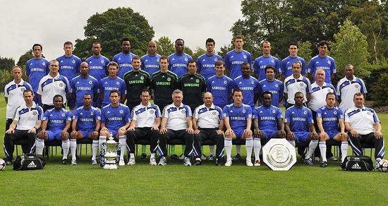

<title>09~10시즌</tile>

히딩크가 사임한 후, AC 밀란 전 감독인 안첼로티 감독을 후임으로 내정하고 영입 시장을 맞이하게 되었다. 아마 예상하기를 안첼로티 감독은 챔피언스 리그에 강한 감독이기에 챔피언스 리그 우승을 위해 왔다고 생각할 수 있다. 그런데 리그를 먹었네? 09-10 시즌은 좋은 활약을 펼친 선수들 덕분에 첼시 팬들로 하여금 다음 시즌에 대한 밝은 기대를 하게 만들었다. 그러나...
  <meta charset="utf-8">
